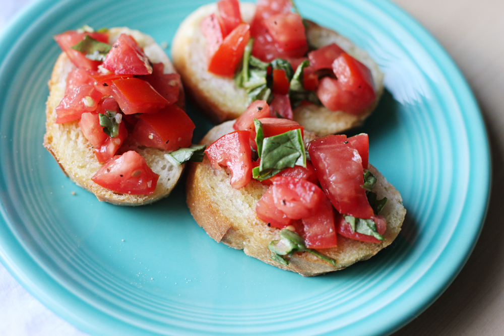

Bruschetta

Description
This is a lovely starter for an italian dinner, but also a great appetizer for parties.
Especially pleasing on a warm summer evening. Best served with a cold bottle of white wine!
Ingredients
- 1/4 cup extra virgin olive oil
- 1 1/2 Tbsp minced fresh garlic
- about 7-8 roma tomatoes, diced
- 1 Tbsp balsamic vinegar
- 1/4 cup chopped basil leaves
- salt and black pepper to taste
- 1 loaf hearty french bread, sliced
Steps
- For tomato mixture: Heat olive oil in a small skillet or saucepan over medium-low heat. Add garlic and saute until just starting to turn golden (don't brown it), about 1 minute.
- Pour into a large mixing bowl. Let cool while you chop the tomatoes and basil.
- Pour tomatoes into bowl with cooled oil mixture. Add basil, balsamic vinegar, salt and pepper. Toss mixture well. Serve right away over toasted bread (spoon some of the juices along with it).
- To toast bread: Brush bread with some olive oil at 400 degrees, turning halfway until toasted (about 10 - 15 minutes). You can also rub slices with 1 of the garlic cloves after toasting (raw and cut in half).